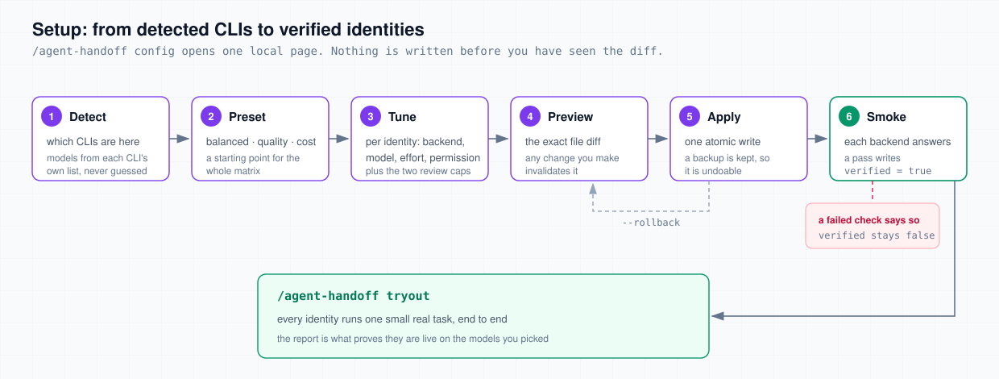
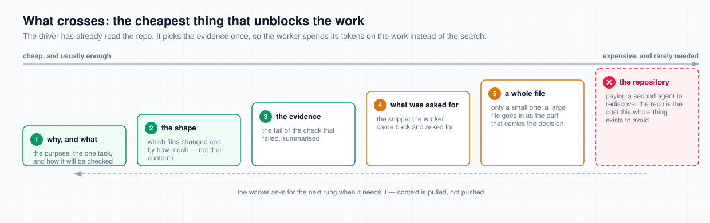
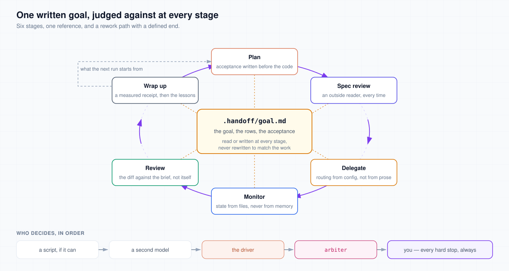
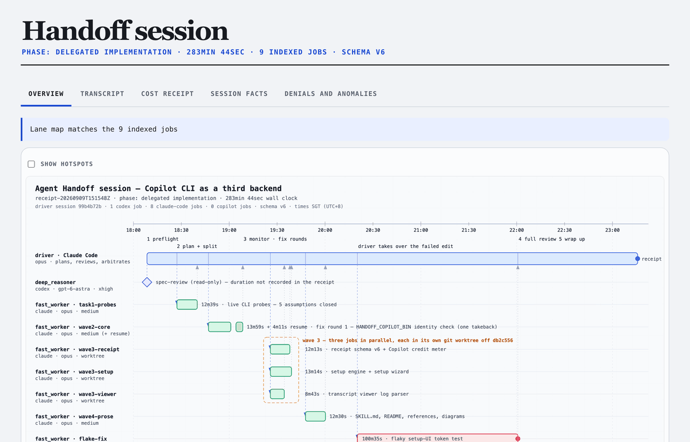

Agent Handoff — user guide
Agent Handoff (Handoff) is a Claude Code skill that divides coding work between a driver and worker agents. Claude Code is the driver: it plans the work, divides it into tasks, and accepts or rejects the result. Each delegated task runs as a background job on one of five worker CLIs: Codex, Claude Code, GitHub Copilot, Cursor, or Antigravity. The config of each identity selects its worker, and each worker pays from its own account. The driver uses less of its quota and its context window. It still reads the full diff against acceptance criteria that it wrote before the work started.
How a run works
A run has five phases, and Claude Code drives all of them:
- Plan and split. The driver writes the plan to
.handoff/goal.mdand divides the work into task rows. It tests its own split, anddeep_reasonerreviews the plan before you see it. - Delegate. The driver sends each row that a worker can do to a worker CLI as a background job.
- Monitor. The driver reads the state of each job from files on disk. It does not keep the job history in its context.
- Full review. The driver reads each returned diff against the plan. If a diff fails, the driver returns it to the worker as a fix round.
- Wrap up. A script writes a receipt from measured data.
![Agent Handoff as five phase columns over three lanes. In plan and split, Claude Code writes goal.md, attacks its own split at the adversarial gate, and sends the plan to deep_reasoner for a read-only spec review before it reaches you. In delegate, a packet and a role become one background job per row on codex, claude, copilot, cursor, or antigravity, and bad routing is refused before any job exists. Monitor reads each job's state off disk and handles anomalies. Full review checks the whole diff against goal.md and sends a failing one back as a resume fix round. The spec review and the fix rounds both go to the arbiter at their cap. Wrap up writes the receipt, and a strip below lists what every packet carries.](diagrams/handoff-lifecycle.svg)
Three rules in this diagram are the most important:
- The config selects the CLI for each job. Each task row names an identity, and the identity’s configured backend selects the CLI and the meter. The driver does not change this choice when it delegates.
- Each job writes its state to disk under
.handoff/. A monitor tick, a session that restarts after a crash, or you on the next day can continue the run from these files. - The driver reads the full diff. It compares the diff with the written acceptance criteria. A summary from the worker never replaces this check.
Words in this guide
| Word | Meaning |
|---|---|
| Driver | The Claude Code session that plans the work, sends jobs, and accepts or rejects the results |
| Worker | The CLI that does one delegated task: Codex, Claude Code, GitHub Copilot, Cursor, or Antigravity |
| Identity | A named capability level, such as fast_worker. The config gives each identity a backend, a model, an effort, and a permission mode |
| Backend | The config value that selects the worker CLI of an identity: codex, claude, copilot, cursor, or antigravity |
| Meter | The account or subscription that pays for a job. Each backend has its own meter |
| Goal file | .handoff/goal.md: the plan, the task table, and the acceptance criteria. Each later phase compares the work with this file |
| Task row | One line in the task table of the goal file. A row names an identity and its acceptance criteria |
| Job | One background run of a worker on one row. Each job has a jobId and a directory under .handoff/jobs/ |
| Packet | The prompt that the driver writes by hand for a job, a review, or a ruling |
| Round | One review pass. The first review is round 1, and each fix round adds one |
| Receipt | The record of a finished run, which a script writes from measured data |
The commands you will use
| Command | What it does |
|---|---|
/agent-handoff config | Opens the local setup page. There you select the CLI, model, effort, and permission mode of each identity, and the two round limits |
/agent-handoff tryout | Runs one small real task on each identity and shows which identities work |
agent handoff (or “hand this to codex”) | Starts a run: plan, split, delegate, monitor, review, and receipt |
/agent-handoff resume | Continues an interrupted run from .handoff/. Rows that the arbiter rejected show first |
/agent-handoff transcript | Shows the event log of one job as a readable page |
/agent-handoff cost-receipt | Shows what each meter recorded for a finished run |
/agent-handoff visualise | Shows the full run on one local page: timeline, transcripts, cost, facts, and denials |
1 · Agent identities and setup
An identity is a capability level with a fixed config: a backend, a model, an effort, and a permission mode. When the driver divides the work, it asks one question for each row: which capability does this task need? The identity’s config gives the rest.
1.1 The five identities
![Five identity cards on the left: deep_reasoner, fast_worker and arbiter as core, e2e_specifier and e2e_verifier as an optional pair, plus a card for the driver itself, which is not an identity and keeps the split, integration, critical paths and final acceptance. They feed a resolution stack — session override, project config, global config, built-in defaults — which produces a backend, model, effort and permission mode, which in turn selects codex exec, claude --print, copilot -p, cursor-agent -p, or agy -p, each with its own meter. Two red notes: no config is a hard error, and a per-job backend that contradicts the role is refused.](diagrams/identities.svg)
deep_reasoner
Unclear work, where a wrong first assumption costs much time later: architecture, difficult diagnosis, and config changes that fail without an error. It also reviews each plan before you see it.
fast_worker
Mechanical work that the acceptance criteria alone can verify: refactors, tests, batch migrations, docs, and wide read-only scans. Most delegated rows use this identity.
arbiter
The independent second solver for a disputed decision. It also makes the decision when a review reaches its round limit without agreement. It never gets routine rows.
e2e_specifier opt-in
Writes Gherkin scenarios with stable IDs from a frozen spec, and tests for them in the repo’s own stack. It needs only the spec, so it runs at the same time as the implementation.
e2e_verifier opt-in
Runs the reviewed tests against a pinned commit. It returns a verdict, and a script validates the verdict before anyone uses it.
The driver itself not an identity
The driver keeps the split decision, the integration across tasks, the paths that are critical to security or correctness, and final acceptance. It does these rows itself, and their identity column shows -.
The three core identities are always in the config. Setup writes the e2e pair only when you run it with --with-e2e, and a config with only the core three is complete. Each identity can use any of the five backends. The values are only in .handoff/config.toml (project) or ~/.config/handoff/config.toml (global).
1.2 How the config selects the CLI
Each field resolves separately, in this order: session override, project file, global file, built-in defaults. The first value that Handoff finds is the result. The job’s meta file records each value and its source, so you can always see why a job used a given model.
Handoff refuses a job in four cases. Each refusal occurs before the job directory exists:
- There is no Handoff config. The error tells you to run
/agent-handoff config. Handoff never uses a default model. - A per-job
--backenddoes not agree with the named identity. The error shows the config command that makes the change correct. - The CLI does not accept the effort value. Each vendor has its own values:
ultrais Codex only,noneis Copilot only, and Claude takeslowtomax. Cursor and Antigravity take onlymodel, because the model name includes the effort. - The model is
autoon Copilot, Cursor, or Antigravity. Withauto, the receipt would record the vendor’s choice, not yours. Antigravity also refuses an empty model, because each fix round must send the model again.
To move work to a different vendor, change the config. The driver must not move a row to a different identity to get a less expensive meter. If the configured identity is not correct for the work, the driver tells you and asks.
1.3 Permissions
Each identity has a permission mode: default or allow-all. default is the normal, limited mode of each CLI. A background job cannot ask you for approval, so the CLI refuses each action that it does not approve. allow-all is the unrestricted mode of each CLI, so the five CLIs do not have the same limits. Read-only has priority over both modes, and fix rounds keep it.
| Backend | default | allow-all | Read-only |
|---|---|---|---|
| Claude Code | dontAsk, with a fixed worker tool set | bypassPermissions | Plan mode |
| Codex | Your own Codex config. Handoff adds no sandbox flag | No approvals and no sandbox | Read-only sandbox |
| GitHub Copilot | All tools allowed. Path and URL checks stay on | Path and URL checks are also off | --mode plan |
| Cursor | Force mode | Force mode, the same as default | --mode plan |
| Antigravity | --dangerously-skip-permissions | The same as default | --mode plan |
On Cursor and Antigravity, the permission mode changes nothing, and Handoff shows a warning for each job that can write. On Cursor, only deny rules in your user or project .cursor/cli.json limit the worker. Handoff writes nothing to that file. On Antigravity, Handoff knows of no rule that limits the worker.
Read-only on Antigravity has two more limits. An allow rule in your agy settings can possibly permit a write in plan mode, and Handoff did not test this. So the driver checks the working tree after each read-only Antigravity job. Also, plan mode refuses all shell commands, ls and git diff too, and the first refusal stops the job. Thus a read-only Antigravity job can only read files, and the driver puts all the data that it needs into the packet.
All of these modes are permission rules only. Handoff adds no OS sandbox for a Claude worker in default mode. A refused tool call also does not change the exit code (see 2.5). For details, see the CLI backends design.
1.4 Setup

verified means that a CLI answered, not only that a file was written.Run /agent-handoff config. The setup page opens on 127.0.0.1 and gets the model list from each CLI:
- Codex: its own
model/list. - Claude Code:
claude --help. - GitHub Copilot: the models that your account can use, each with the efforts that it accepts.
- Cursor:
cursor-agent models. A model is a full catalogue slug, and its effort is alwaysmodel. - Antigravity:
agy --output-format json models. A model is a full catalogue id, and its effort is alwaysmodel.
The page never guesses a model, and it never replaces your model with a weaker one. If it cannot read a model list, it offers no new model and names the login that you must fix. A model that is already in your config stays visible, so the page cannot replace it without your action. If a configured Cursor or Antigravity model is no longer in its catalogue, smoke refuses it before its paid run.
The top of the page shows one tile for each CLI, with the CLI’s icon. The same icon shows next to the Runs on menu of each identity. If the Codex, Copilot, or Cursor CLI is not installed or is old, its tile has a button. The button shows the install or update command, for example codex update, and a link to the official page. Claude Code and Antigravity get no update check.
Handoff finds each CLI on your PATH, or at the path in HANDOFF_CODEX_BIN, HANDOFF_CLAUDE_BIN, HANDOFF_COPILOT_BIN, HANDOFF_CURSOR_BIN, or HANDOFF_ANTIGRAVITY_BIN. The Cursor CLI is cursor-agent and the Antigravity CLI is agy. The commands cursor and antigravity open the IDEs. Other programs also use the names copilot and agy, so Handoff checks each binary and ignores the wrong one.
After apply, the smoke test sends one small real request for each Copilot, Cursor, and Antigravity identity. This costs one premium request on Copilot, about 16k input tokens on a small Cursor model, or about 12k on Antigravity’s Flash. If your account cannot use a model, the CLI refuses it before a session starts, at no cost. The CLI’s message tells you what to change.
Know two Cursor facts before you select it. If a model name shows (NO ZDR), that model has no zero data retention, and a delegated job sends it your repository content. If your Cursor attribution setting is on, worker commits get a Co-authored-by: Cursor trailer, also in e2e worktree commits. Handoff reports this setting and does not change it.
The page also sets the two round limits, because they are part of the config and not of a prompt:
[fast_worker]
backend = "codex" # claude | codex | copilot | cursor | antigravity
model = "gpt-5.6-sol"
effort = "medium"
permission_mode = "default" # default | allow-all
verified = false
[review]
spec_max_rounds = 1
implementation_max_rounds = 3After a successful apply, run /agent-handoff tryout. Each identity does one small task, and the report shows which identities work on the models that you selected. A failed row tells you what failed and what to do. Tryout never puts a different model in its place.
2 · The handoff
This section shows the main part of a run. The driver changes a request into rows, sends the rows as jobs, monitors the jobs, and recovers a job that stops or fails. The six parts follow in sequence.
2.1 Plan: the goal file comes first
![The request enters and becomes .handoff/goal.md, holding a goal sentence with its done_when, the checkpoint rule and a task table where each row carries an identity — deep_reasoner, fast_worker, the driver itself, and optionally an e2e row. The plan then goes through an adversarial gate asking three questions: is the cheap tier really enough, is the split worth its seams, does it match the stakes. A failing row loops back to be corrected, merged or kept inline. A surviving split goes to the spec review, then to ready-to-delegate with no jobIds yet.](diagrams/plan-split.svg)
The goal file, .handoff/goal.md, is the one written reference for the run. It has these sections:
| Section | What it contains |
|---|---|
| Goal | One sentence that says why the work is necessary, with a done_when condition. A check that passes when you delete tests or lower the standard is not valid. In that case, change the check |
| Checkpoint rule | When the worker must stop and ask you: before a destructive action, for a real change of scope, or when it needs something that only you can give |
| Spec review | The status of the plan review, and one line for each round |
| Tasks | One row for each task: id · identity · task · acceptance · depends · effort · status · jobId |
| Anomalies · Arbitration · Notes | The problems, each ruling, and the handover notes for open items |
Three columns are more important than they look:
acceptancemust be a command or a behaviour that you can see, because the review compares the diff with it.dependstells the monitor which rows must finish before it submits this row.statusprevents duplicate jobs across ticks and sessions. If a status is out of date, the monitor delegates the row two times.
The driver and the monitor loop both write this file. Each write gives the sha256 of the file at its last read. If the file changed since then, the write stops and asks for a new read, so one update cannot overwrite the other. Small work gets no goal file, because the file adds no safety to a five-line fix.
2.2 Split: one decision for each row, then a test
To split the work, the driver asks one question for each row: which capability does this work need? There is no second decision about owner or meter, because each extra decision is one more place for an error. The driver checks for two errors. It must not send a quality-critical step to a less expensive identity to save money. It must not do mechanical work itself.
Before it delegates, the driver tests its own split with three written questions. This test is the adversarial gate:
- Can a less expensive identity really do each delegated row?
- Is the cost to integrate the parts less than the saving?
- Does each row’s identity agree with the risk, with a reason why a more expensive identity is not necessary?
If a row passes all three questions, the driver delegates it. If not, the driver changes the row’s identity, merges the row into a nearby row, or does the row itself.
The split also decides about acceptance tests. Some changes affect behaviour that users can see at a real interface: a UI, an API, or a mobile screen. For such a change, the split adds an e2e_specifier row and an e2e_verifier row. The depends column makes the verifier wait for the tests and for the implementation. Internal refactors, docs, config, and library work do not get these rows. If a change needs them and the identities are not configured, the driver tells you one time and names /agent-handoff config --with-e2e. Then it continues without them.
2.3 Delegate: the packet and the config stay separate
![Two parallel paths. The upper one carries the work: a task row becomes a delegation packet the driver writes by hand, saved as prompt.md and kept unchanged as the record of the ask. The lower one carries the routing: --role resolves through config into run.sh flags naming backend, model and effort, with four refusals listed — no config, a backend contradicting the role, an unsupported effort, and model equals auto. Both meet at the job directory, which holds prompt.md, run.sh, meta, log.jsonl, stderr.log, pid, exit_code and session_id, and the configured backend launches it detached. The jobId goes back into the row as status delegated.](diagrams/delegate-paths.svg)
No script writes the packet. The driver writes it in its own context, saves it to a temporary file, and gives the path to the script. The script checks only that the file exists. This is intentional: if a script made the packet, nobody would think about its content.
Cost limits what goes into the packet. The driver already read the repository, so it selects the evidence one time. The worker then uses its tokens on the work.

Each handoff in the flow has a named packet. The packets differ mainly in what they let the receiver do.
![Claude Code at the centre sending five named packets: a delegation packet to the worker; a goal packet to you with the plan, the open decisions and what a yes authorizes; a spec review packet to deep_reasoner carrying the plan verbatim with no permission to change anything; an arbitration packet to the arbiter with both sides and the evidence; and e2e packets to the acceptance pair with the spec inline, a named test target and a branch of their own. A strip below lists what every packet carries: why the work matters, one clear task, acceptance you can run, where it may not go, and a reply without filler.](diagrams/handoff-packet-anatomy.svg)
Some rows must not share a working tree: the e2e pair, and other rows that you want to keep separate. These rows run in a Git worktree that starts from a fixed commit SHA. Four rules apply to a worktree job:
- The repo argument always names the main repo, never the worktree.
- The base becomes a SHA before the job directory exists. So a branch that moves cannot give a verdict for a commit that nobody tested.
- The worker commits on its own branch and does nothing more.
- The driver reviews the diff, integrates it, and then runs cleanup.
Cleanup refuses a worktree that has uncommitted changes, so no work is lost. Be careful about one more fact. A worktree gets only tracked files, and Git ignores .handoff/. So no worktree job can read the goal file. The driver puts the spec, the frozen goal excerpt, and the artifact paths into the packet.
2.4 Monitor: read the files
![One decision — how long will it run — splits into waiting on a short job with status --wait, or arming a five-minute loop. The loop is a cycle of four stations: read goal.md first for the split and the statuses, ask each running job for its status, read its last event from log.jsonl, write the statuses back for the next tick. It exits when no job is left running. Two side notes: depends holds a row until the rows it waits on have finished, and an anomaly branch covering a failed job, two quiet ticks, cancelling, reading the logs, resubmitting or taking it back.](diagrams/monitor-loop.svg)
The expected run time of a job decides how the driver monitors it. If the job takes less than about five minutes, the driver waits for it and reads the printed state line. The exit code alone cannot show the difference between “finished” and “still in progress”. For longer or parallel work, the driver starts a five-minute loop, and the tick prompt is the full monitor program.
The monitor uses only evidence: the job’s status, the end of its event log, its stderr, and the repository. Chat text is not evidence. A claim of progress that nothing on disk supports is also not evidence.
2.5 Anomalies: when a job fails or stops
![Top: a state machine. Submit leads to RUNNING while its process is alive, then to DONE on a zero exit code, FAILED on a bad exit or a dead process, or CANCELLED when it was stopped. A red box lists what counts as an anomaly — a job that failed, a job that went quiet, a finished job whose tool calls were denied — and the handling: cancel it, read the logs, resubmit corrected or take it back, and it goes in the receipt either way. A side card names the evidence: pid, exit_code, cancelled. Bottom: a resume chain of job, -r2 and -r3 review passes, a fourth refused before it starts, and the arbiter ruling on the dispute, with a bracket saying each round inherits the session, the backend and the worktree.](diagrams/job-lifecycle.svg)
An anomaly is a FAILED status, or two ticks in sequence with no new event. The driver then does four steps. It cancels the job and reads stderr.log and the end of the event log. Then it resubmits the job with a corrected prompt, or it does the task itself. In both cases, it records the anomaly for the receipt.
Some signs are specific to a backend:
| Backend | Sign | What it means, and what the driver does |
|---|---|---|
| Copilot | A failed job with an empty stderr | The API error is only an event in the log. The driver always reads the log |
| Cursor | An empty log at launch | Cursor rejected the model. stderr.log lists the models that Cursor accepts |
| Cursor | A fix round does not know its parent’s work | Cursor did not save the session, and it started a new, empty one with the same id. It gives no warning. The driver sends the full packet again |
| Antigravity | One error event at launch | Antigravity rejected the model. stderr.log shows the message and the available models |
| Antigravity | status reports that the context is lost | Antigravity did not find the old conversation and started a new one. The driver sends the full packet again |
| Antigravity | A fix round fails on its model | The model left the catalogue, and a fix round never changes the model. Set a current model with handoff-config.py set, then resubmit |
| Antigravity | A worker says that a check passed | Antigravity logs no exit code for shell commands, so the driver runs the check again |
A refused tool call does not change the exit code. A blocked worker finishes and reports checks that it did not run, so its report of those checks has no value. The driver treats a denial count above zero as a failed job. It runs the blocked commands itself and records them. Codex does not count denials at all, so the driver always verifies checks on disk and does not trust a summary.
2.6 Resume: two different features with one name
A fix round is resume <jobId>. It continues the same worker session, with the parent’s backend, identity, effort, and worktree from its meta. It has its own round directory and its own prompt. That prompt contains only the findings in priority order, the failed criteria, and the instruction “continue end-to-end from here”. The session still has the original packet, so a second copy only costs tokens. Handoff refuses a round above the configured limit before the job directory exists.
A session resume is /agent-handoff resume. It continues a run from .handoff/ after an interruption. It reads the final statuses in the goal file, the job directories, the saved receipts, and the verdicts. It does not calculate the state again from the repository. It shows rows that the arbiter rejected first, and it never opens a rejected row again by itself.
3 · The two review gates
The two gates have the same shape: a maker, a reviewer, a dispute with a round limit, and a third reader for a dispute that does not end. Only the roles are different.
![Two bands with identical shapes. In the spec review band the driver writes the plan in goal.md, deep_reasoner reads it read-only, and if every blocker is settled the plan reaches you, adjusted; otherwise one more pass runs if the cap allows. In the implementation review band the worker's whole diff is read by the driver against the brief, and if every finding is settled the row is done; otherwise a fix round runs while passes are left. Both bands escalate to a shared arbiter when there is no agreement at the cap, and the arbiter's three outcomes are approve, reject and no verdict. A footer says a round is one review pass, with spec_max_rounds of 1 and implementation_max_rounds of 3.](diagrams/review-gates.svg)
| Spec review | Implementation review | |
|---|---|---|
| What is reviewed | The plan in .handoff/goal.md | The diff of a delegated row |
| Maker | The driver | The row’s worker |
| Reviewer | deep_reasoner, read-only | The driver |
| Agreement | The driver declined no blocking finding | The driver accepts the diff |
| Round limit | spec_max_rounds, default 1 | implementation_max_rounds, default 3 |
| On rejection | The run stops before the driver delegates anything | The driver keeps the row separate. Independent rows continue |
3.1 Spec review: a second reader for each plan
At the adversarial gate, the driver judges its own split. Without a second reader, only its author would read the plan that all later gates use. So deep_reasoner reads each plan before you see it. It runs as a real read-only job on its configured backend and marks each finding as blocking or advisory. The driver accepts or declines each finding and records why.
Three rules keep this review short:
- It has a limit. Below the limit, each declined blocking finding returns to the same reviewer with the changed plan and the driver’s reasons. At the limit, if the driver still declines a blocking finding, the dispute goes to the arbiter.
- It runs one time for each run. The
## Spec Reviewblock of the goal file records the status. Any status other than “not run” means that the automatic review is complete. A resumed session finishes an open review and does not start a new one. - It is read-only. The reviewer returns findings only. The driver uses them as input to its decision and does not apply them without a read.
This review is not blind, by design. The plan is the driver’s answer, so the reviewer must see it. The reviewer thus starts from the author’s view, and it finds a wrong assumption less often than an independent solver. Handoff does not call this arbitration. If deep_reasoner uses the same vendor as the driver, the run records same-vendor.
A review that fails, stops, or returns neither findings nor a one-line “this is sound” proves nothing, so it is not a round. The driver tries it again one time as a new job. If it fails again, the run stops and waits for you.
3.2 Implementation review: the diff against the brief
The driver gets the result of the job and reads the denial count first. Next, it reads the acceptance column and the task brief again. Then it reads the full diff of the files that the job changed, and it runs the fastest relevant check. It reads all of the diff, never a sample.
The question is “does this diff satisfy the brief?”. It is not “is this diff consistent with itself?”. A reviewer who has only the diff starts to use “consistent with the change” as the spec. That reviewer does not see work that the worker never started. In the Superpowers 6 test runs, reviewers with only a diff found none of five absent task briefs.
3.3 Acceptance tests
![Five steps: e2e_specifier writes the tests in its own worktree from the spec; the driver reads them against the acceptance criteria, the step that stops a weak gate passing a broken feature; their hash is recorded so a later edit shows up; tests and code meet in one commit on the feature branch, leaving main untouched; e2e_verifier runs them pinned to that commit. Three outcomes: PASS, where the merge decision is still yours; FAIL, a finding for whoever wrote the code and a spent round; BLOCKED, where nothing was proved and the rerun costs no round. A footer says what the verifier may touch: not a scenario or an expected value, the launch scaffolding if it says so, and never the product code.](diagrams/e2e-gate.svg)
The verdict is a validated file, not a sentence in a reply. It controls a merge decision, and in a reply an agent can write “PASS” after a non-zero exit.
| Verdict | What it must satisfy | What occurs next |
|---|---|---|
PASS | Exit code zero, all scenarios passed, at least one scenario, no findings, and the same scenario hash that the driver recorded at review | It goes to the merge decision. That decision still needs the driver’s final review and your approval |
FAIL | At least one finding, and a non-zero exit code or fewer passes than scenarios | The finding goes to the author of the code, never to the verifier. It uses one round |
BLOCKED | Nothing passed, and a finding names the blocker | Nothing is proved. Fix the prerequisite and run the tests again. BLOCKED is never a PASS, and the new run is not a round |
The verifier can change how a scenario starts. If it changes what a scenario asserts, the run becomes invalid. The driver then reviews the changed acceptance meaning again, records a new hash, and starts that part again.
3.4 Round limits and arbitration
A round is one review pass in both gates. The first review is round 1, and each fix round adds one, so the implementation default of 3 permits two fix rounds. The limits are in the [review] section of the config, and they resolve by field like all other values. You cannot override them for one call, because the resume script reads the limit from the config itself. To get more rounds, increase the number in the config, where everyone can see the change.
If a gate reaches its limit without agreement, the dispute goes to arbiter as a read-only job. The packet contains the full dispute: the plan or the brief, the acceptance criteria, the evidence, and each round’s findings with the other side’s reply. The arbiter returns a verdict line and a reason for each disputed point. Its ruling is final:
- Approve. The arbiter accepts the work over the driver’s open findings. For a diff, the row goes to done. An approval never replaces an acceptance-test PASS.
- Reject. The rejection is final for the run. The driver marks the row rejected and keeps its diff as a patch or a worktree. Rows that depend on it wait, and independent rows continue.
- No verdict. An arbiter job that fails or returns a malformed answer is not an approval. It gets one new attempt. If that attempt also fails, the run records “no verdict”, and you decide about the row.
Each ruling goes to three places: a line in the ## Arbitration block of the goal file, a handover in Notes for a rejection, and the anomalies line of the receipt. After a rejection, the next step is yours. You can increase the limit and resume the chain. You can also write a new brief and start a new chain, or do the task yourself.
4 · Feedback and drift control
Drift occurs when each phase is compared only with the phase before it. The plan moves toward the split, and the split moves toward the diff. At the end, the diff agrees with everything except your request. Handoff prevents this with one written reference that each phase reads, and a rework path with a fixed end.

4.1 Where drift can start
| Risk | Control | Enforced by |
|---|---|---|
| The work meets the goal’s words but not its purpose | The rule on done_when that a check must not pass when tests are deleted, and hard stops that “done” cannot approve | Rule in the prompt |
| Only the author judges the plan | The spec review of each plan, recorded in the goal file | Rule in the prompt; a script enforces the round limit |
| The split follows cost, not risk | The three written questions of the adversarial gate | Rule in the prompt |
| Work runs on the wrong meter | The backend comes from the config, and Handoff refuses a per-job backend that does not agree | Script refuses |
| A worker makes its own stop points | The checkpoint rule, in the goal file and in each packet | Rule in the prompt |
| A verdict names a commit that nobody tested | The base becomes a fixed SHA before the job exists, and the verdict repeats it | Script refuses |
| The reviewer judges the diff, not the goal | The review reads the acceptance criteria from the goal file first | Rule in the prompt |
| The acceptance tests are weaker than the criteria | The driver reviews the scenarios and records their hash before the verdict counts | Script refuses an invalid verdict |
| A failed task loops forever | The round limit, then a final ruling | Script refuses above the limit |
| The run reports a better result than it had | A fixed receipt schema, measured durations, unverified roles shown as unverified, and no invented savings | Script refuses an invalid receipt |
The diff review depends on the driver. Scripts refuse a bad config, a base that is not a fixed SHA, an invalid verdict, a round above the limit, and an invalid receipt. No script can decide if a diff satisfies a brief, so that check is a rule in a prompt. All claims of safe delegation depend on it. When a run reports success, ask for the evidence of the review.
4.2 What the next run learns
At wrap up, the run gives input to the next run, and two stores keep that input. CLAUDE.md and AGENTS.md keep facts that each future session must always see: architecture, commands, and conventions. Memory keeps experience: which tasks an identity did well, which effort levels were correct, where rework occurred, and what a ruling decided. Instruction files always apply. Memory helps the driver make the next split decision.
5 · Evidence
Handoff claims that delegated work used a different meter and stayed out of the driver’s context. A statement from the driver does not prove this. The files below let you check the claim, and scripts write them, not the driver.
![Left, while the run is going: a session-start marker stamped before the first job; goal.md with every task status, review round, ruling and note; and one directory per job holding prompt.md, run.sh, meta, log.jsonl, stderr.log and exit_code. Middle, at wrap up: the receipt is generated by measuring those files, carrying duration, the five job counts, checks, anomalies and roles_used, is validated before anything reaches disk, and is then saved under .handoff/receipts/. Right, afterwards: the job transcript, the cost receipt, the session page, and a resume that reads this rather than the repo. Three rules: generated never typed, measured never repriced, and a gap is named rather than written as zero.](diagrams/evidence-flow.svg)
5.1 Job files: what a run writes while it runs
Each job has its own directory, and a later tool reads each file in it.
| File | What it contains, and who reads it |
|---|---|
prompt.md | The exact request. Handoff copies it one time at submit and never changes it |
run.sh | The command that ran, with all its flags |
meta | The identity, backend, model, and effort, with the source of each value. Also the submit time, the parent round, and the permission mode |
log.jsonl | The worker’s event stream: what it read, what it ran, and what it concluded. The transcript and the cost receipt read it |
stderr.log | Tokens, warnings, and login errors. Read it first when a job fails |
pid · exit_code · cancelled | The three files that give the job state |
session_id | The id that lets a fix round continue the session. Codex, Claude Code, and Cursor write it from their event stream. Copilot gets it before launch, because Copilot sends its id only at the end. Antigravity takes it from the conversation_id of its first event, init |
usage.json | Copilot only: the token and credit counters that the CLI writes at exit |
Two more files are outside the job directories. .handoff/session-start gets its time stamp before the first job, and the receipt measures the run from it. Without this file, the receipt script refuses to write a receipt. .handoff/goal.md contains the rounds, the rulings, and the task statuses, and it uses the same hash check as the monitor.
These files contain all that the worker read. In one sample run, the largest single event had 110 KB of file content. Git ignores .handoff/ by default. The transcript tool warns you when its output is not ignored, because a committed transcript can disclose private data.
5.2 The receipt
Each run that is not trivial ends with a receipt that has a fixed schema. The receipt lists the run’s jobs, the backend and duration of each job, the checks, and the problems.
[Handoff session receipt]
phase: final fix
claude_session: 9836fe7e-4aca-47a6-83b5-69086b8db275
duration: 74min 12sec
codex_jobs: 2
codex_job_durations: job-t1=18min 12sec; job-t1-r2=6min 05sec
cc_jobs: 1
cc_job_durations: job-t2=9min 30sec
copilot_jobs: 1
copilot_job_durations: job-t3=4min 47sec
cursor_jobs: 0
cursor_job_durations: none
antigravity_jobs: 0
antigravity_job_durations: none
checks: bash scripts/check-skill-repo.sh .; jq schema check; git diff --check
anomalies: none
scope: project
config_source: project
roles_used: [{"role":"fast_worker","host":"codex","model":"gpt-fast","effort":"high","verified":true}]
receipt_schema_version: 8A script measures each value in the receipt:
durationis the wall-clock time from the start marker. If the run waited for a permission prompt, the number includes that wait.- Each job duration starts at the job’s submit time and stops at the time stamp of its exit code. Jobs from an earlier run are not included, and a job that has not finished shows
running. - The five job counts divide the run by the backend that each job recorded. So “four jobs ran on the Codex subscription” is a claim that you can check.
- A role that nobody verified stays in the list with its
verifiedflag as it is. The receipt never removes it.
The receipt script validates the receipt before it writes it. It refuses an invalid receipt and saves a valid one to .handoff/receipts/. The cost receipt and the session page look there when you name no file. You can validate a saved receipt again with the same check that CI uses. A receipt with an old schema fails. In that case, generate it again, and do not edit it by hand.
Handoff does not report invented token savings. If exact numbers are not available, the run reports facts that you can verify. It names the backend of each job and counts the jobs and fix rounds. It also states that the driver read the full diff against the acceptance criteria, and that the checks passed. Three claims are not permitted, because no counter supports them: context that the driver did not use, money that was actually billed, and the difference between two numbers shown as a saving.
5.3 Read a finished run
![A receipt feeds a local server on 127.0.0.1 with a one-run key, which opens a page with five tabs: Overview, Transcript, Cost receipt, Session facts, and Denials and anomalies. The overview shows the run as lanes on a time axis — the driver plus three jobs, one of them failed — with a dashed hotspot over a lane and a note that clicking a lane opens its transcript. Three side notes: the timeline is drawn rather than measured, the other four tabs come straight from the files, and a lane the files contradict loses its click. A bottom row covers the three cases: a timeline with lanes, one without, and none at all.](diagrams/session-page.svg)
- The transcript (
/agent-handoff transcript) shows one job’s event log as a page: the prompt, each command, each file change, each refused call, and the final answer. It shows what the job actually did, which a job summary cannot show. You can also drop a log file on the page to read a job from a different repository. - The cost receipt (
/agent-handoff cost-receipt) shows what each meter recorded, in that meter’s units. Codex jobs show token counters and no cost figure, because the Codex CLI reports none. Cursor and Antigravity jobs also show token counters and no cost figure. Claude jobs show the cost that the CLI reports, marked as CLI-reported. Copilot jobs show premium requests and AI credits, never money. The page marks figures that overlap and does not add them. - The session page (
/agent-handoff visualise) shows the run on one local page: the timeline, each job’s transcript, the cost receipt, the receipt’s facts, and all refused tool calls of the run. A model draws the timeline from the receipt, so the page marks its text as a narrative. A script checks its lanes against the files. A lane loses its link if it names a job that is not in the receipt, or if its time disagrees with the evidence. The page then tells you.

A later session gets only this directory: the final statuses in the goal file, the job directories, the saved receipts, and the verdicts. /agent-handoff resume reads these files and does not calculate the state again from the repository. For the same reason, a monitor tick can continue after a crash.